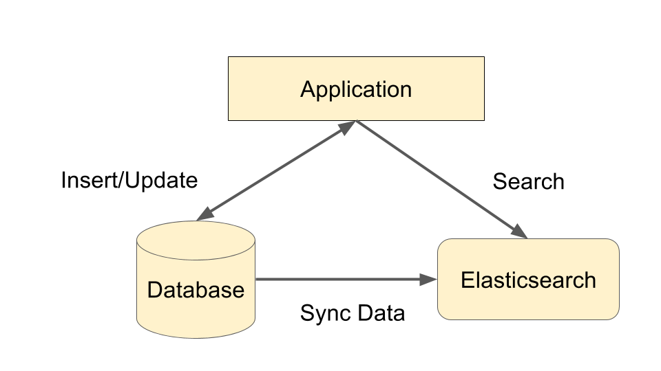

Elasticsearch best practice
Serhii Shepel
Agenda
- Elasticsearch
- What is
- How to get started
- Basic Concepts
- How does a search engine work
- Mapping
- Search
- Own experience

How to get started with Elasticsearch?
It is that easy
- Download Elasticsearch from www.elastic.co
- Elasticsearch only requires Java to run
wget https://download.elasticsearch.org/elasticsearch/release/...
tar -zxvf elasticsearch-2.2.0.tar.gz
cd elasticsearch-2.2.0/bin
./elasticsearch.sh
Zero configurations
- Elasticsearch just works
- No configuration is needed
- It has sensible defaults settings
Is Elasticsearch alive?
You can access it at http://localhost:9200 on your web browser, which returns this:
{
"status":200,
"name":"Cypher",
"cluster_name":"elasticsearch",
"version":{
"number":"1.5.2",
"build_hash":"62ff9868b4c8a0c45860bebb259e21980778ab1c",
"build_timestamp":"2015-04-27T09:21:06Z",
"build_snapshot":false,
"lucene_version":"4.10.4"
},
"tagline":"You Know, for Search"
}
REST API
- Elasticsearch hides the complexities of Lucene behind a REST API
- POST (create)
- GET (read)
- PUT (update)
- DELETE (delete)
DEMO - CURL works just fine

- An index is like a database
- An type is like a SQL table
What is stored in Elasticsearch?
JSON documents!
{
"title": "Introduction to Elasticsearch",
"date": "2016-04-07",
"author": "Serhii Shepel"
}
Get
$curl -X GET localhost:9200/big-one/pizza/1
Result:
{
"_index":"big-one",
"_type":"pizza",
"_id":"1",
"_version":1,
"found":true,
"_source":{
"name":"California Sunset Chicken"
}
}
Update
$curl -X PUT localhost:9200/big-one/pizza/1 --data
'{
"name":"California Sunset Chicken Awesome"
}'
Result:
{
"_index":"big-one",
"_type":"pizza",
"_id":"1",
"_version":2,
"created":false
}
Delete
$curl -X DELETE localhost:9200/big-one/pizza/1
So far
- All we have is NoSQL document store which is
- Fast
- Scalable
- Easy to use
Basic Concepts
- Index:
- An index is like a ‘database’ in a relational database. It has a mapping which defines multiple types.
- An index is a logical namespace which maps to one or more primary shards and can have zero or more replica shards
- Type:
- A type is like a ‘table’ in a relational database. Each type has a list of fields that can be specified for documents of that type. The mapping defines how each field in the document is analyzed
Basic Concepts
- Document:
- A document is a JSON document which is stored in elasticsearch. It is like a row in a table in a relational database. Each document is stored in an index and has a type and an id.
- A document is a JSON object (also known in other languages as a hash / hashmap/ associative array) which contains zero or more fields, or key-value pairs. The original JSON document that is indexed will be stored in the _source field, which is returned by default when getting or searching for a document.
Basic Concepts
- Field:
- A document contains a list of fields, or key-value pairs. The value can be a simple (scalar) value (ega string, integer, date), or a nested structure like an array or an object. A field is similar to a column in a table in a relational database.
- The mapping for each field has a field ‘type’ (not to be confused with document type) which indicates the type of data that can be stored in that field, eginteger, string, object. The mapping also allows you to define (amongst other things) how the value for a field should be analyzed.
Basic Concepts
- Mapping:
- A mapping is like a ‘schema definition’ in a relational database. Each index has a mapping, which defines each type within the index, plus a number of index-wide settings. A mapping can either be defined explicitly, or it will be generated automatically when a document is indexed
How does a search engine work?
Your document collection is big!
Scan through all the documents every time you search for something?
Pre-process the documents and create an index!
Create an inverted index

Find unique terms
Search against the inverted index

Mapping
- Each field has a data type which can be:
- a simple type like text, keyword, date, long, double, boolean or ip .
- a type which supports the hierarchical nature of JSON such as object or nested.
- or a specialised type like geo_point, geo_shape, or completion>.
Mapping
- It is often useful to index the same field in different ways for different purposes. For instance, a string field could be indexed as a text field for full-text search, and as a keyword field for sorting or aggregations. Alternatively, you could index a string field with the standard analyzer, the english analyzer, and the french analyzer.
- This is the purpose of multi-fields. Most datatypes support multi-fields via the fields parameter.
public class CustomerInfoSearchDocumentMap
: PropertiesDescriptor<CustomerInfoSearchDocument>
{
public CustomerInfoSearchDocumentMap()
{
Keyword(p => p.Name(n => n.Id).Index());
Number(p => p.Name(n => n.Age).Index());
Text(p => p.Name(n => n.FirstName)
.Analyzer(Analyzer.PrimaryField)
.SearchAnalyzer(Analyzer.PrimaryFieldSearch)
);
Text(p => p.Name(n => n.LastName)
.Analyzer(Analyzer.PrimaryField)
.SearchAnalyzer(Analyzer.PrimaryFieldSearch)
);
Text(p => p.Name(n => n.FullName).Index()
.Fields(fs => fs
.Keyword(k => k
.Name(n => n.FullName.Suffix(Normalizer.Sort))
.Normalizer(Normalizer.Sort))
);
}
}
Analyzer
- Tokenizer
- Filters
- CharFilters
Tokenizer
- Standard Tokenizer:
- The standard tokenizer divides text into terms on word boundaries, as defined by the Unicode Text Segmentation algorithm. It removes most punctuation symbols. It is the best choice for most languages.
- Letter Tokenizer
- The letter tokenizer divides text into terms whenever it encounters a character which is not a letter.
- Lowercase Tokenizer
- The lowercase tokenizer, like the letter tokenizer, divides text into terms whenever it encounters a character which is not a letter, but it also lowercases all terms.
Tokenizer
- Whitespace Tokenizer
- The whitespace tokenizer divides text into terms whenever it encounters any whitespace character.
- UAX URL Email Tokenizer
- The uax_url_email tokenizer is like the standard tokenizer except that it recognises URLs and email addresses as single tokens.
- Classic Tokenizer
- The classic tokenizer is a grammar based tokenizer for the English Language.
Tokenizer
- N-Gram Tokenizer
- Edge N-Gram Tokenizer
Standart Tokenizer
Example
POST _analyze
{
"tokenizer": "standard",
"text": "The 2 QUICK Brown-Foxes jumped over the lazy dog's bone."
}
The above sentence would produce the following terms:
[ The, 2, QUICK, Brown, Foxes, jumped, over, the, lazy, dog's, bone ]
Ngram tokenizer
Example
POST _analyze
{
"tokenizer": "ngram",
"text": "Quick Fox"
}
The above sentence would produce the following terms:
[ Q, Qu, u, ui, i, ic, c, ck, k, F, Fo, o, ox, x ]
Ngram tokenizer
Configuration
- min_gram: Minimum length of characters in a gram. Defaults to 1.
- max_gram: Maximum length of characters in a gram. Defaults to 2.
Ngram tokenizer
Configuration
- token_chars: Character classes that should be included in a token. Elasticsearch will split
on characters that don’t belong to the classes specified. Defaults to [] (keep all
characters). Character classes may be any of the following:
- letter — for example a, b
- digit — for example 3 or 7
- whitespace — for example " "
- punctuation — for example ! or "
- symbol — for example $ or √
Ngram tokenizer
Example
"min_gram": 2,
"max_gram": 3,
"token_chars": [
"letter",
"digit"
]
POST _analyze
{
"tokenizer": "ngram",
"text": "123 2 Quick"
}
The above sentence would produce the following terms:
[12, 123, 23, Qu, Qui, ui, uic, ic, ick, ck]
Edge NGram Token Filter
Example
"min_gram": 2,
"max_gram": 10,
"token_chars": [
"letter",
"digit"
]
POST my_index/_analyze
{
"analyzer": "my_analyzer",
"text": "2 Quick Foxes."
}
The above sentence would produce the following terms:
[ Qu, Qui, Quic, Quick, Fo, Fox, Foxe, Foxes ]
Filters
- Lowercase
- Ngram
- EdgeNgram
- ASCII Folding
- Stop
- Stemmer
ASCII Folding Filter
Example of scandinavian_folding
åÅäæÄÆ->a
öÖøØ->o
Stop Token Filter
Example
"my_stop": {
"type": "stop",
"stopwords": "_english_"
}
POST my_index/_analyze
{
"analyzer": "my_analyzer",
"text": "london is the capital of great britain"
}
The above sentence would produce the following terms:
[ "london capital great britain" ]
Stemmer Token Filter
Example
Tryolabs -> tryolab
running -> run
monkeys -> monkei
KANGAROOS -> kangaroo
and -> and
jumping -> jump
elephants -> eleph
Character Filters
- HTML Strip Character Filter: The html_strip character filter strips out HTML elements like and decodes HTML entities like &.>
- Mapping Character Filter: The mapping character filter replaces any occurrences of the specified strings with the specified replacements.
- Pattern Replace Character Filter: The pattern_replace character filter replaces any characters matching a regular expression with the specified replacement.
Fields
PUT my_index
{
"mappings": {
"properties": {
"city": {
"type": "text",
"fields": {
"raw": {
"type": "keyword"
}
}
}
}
}
}
Fields
GET my_index/_search
{
"query": {
"match": {
"city": "york"
}
},
"sort": {
"city.raw": "asc"
}
}
}
Fields
Text(p => p.Name(n => n.FullName)
.Fields(fs => fs
.Keyword(k => k
.Name(n => n.FullName.Suffix(Normalizer.Sort))
.Normalizer(Normalizer.Sort))
);
Nested vs Object
public class Book
{
public int Id { get; set; }
public string Title { get; set; }
public IEnumerable Authors { get; set; }
}
public class Author
{
public string First { get; set; }
public string Last { get; set; }
}
Nested vs Object
public class BookMap
: PropertiesDescriptor<Book>
{
public BookMap()
{
Keyword(p => p.Name(n => n.Id).Index());
Text(p => p.Name(n => n.Title)
.Analyzer(Analyzer.PrimaryField)
.SearchAnalyzer(Analyzer.PrimaryFieldSearch)
);
Object<Author>(p => p.Name(n => n.Authors));
Nested<Author>(p => p.Name(n => n.Authors));
}
PUT book/_doc/1
{
"title" : "Clean Code",
"authors" : [
{
"first" : "Robert",
"last" : "Martin"
},
{
"first" : "Kent",
"last" : "Beck"
}]
}
Would be transformed internally into a document that looks more like this in Object type case:
{
"title" : "clean code",
"authors.first" : [ "robert", "kent" ],
"authors.last" : [ "martin", "beck" ]
}
Nested vs Object
GET my_index/_search
{
"query": {
"bool": {
"must": [
{ "match": { "authors.first": "robert" }},
{ "match": { "authors.last": "beck" }}
]
}
}
}
Simple structure of Search
GET /shirts/_search
{
"from": 0,
"size": 10,
"query": {
"bool": {
"filter": [
{ "term": { "color": "red" }}]
}
},
"highlight" : {
"fields" : {
"content" : {}
}
},
"aggs": {
"models": {
"terms": { "field": "model" }
}
},
"post_filter": {
"term": { "color": "red" }
},
"sort": ["_score","model"]
}
Aggregations
PUT /gitHubItem
{
"mappings": {
"_doc": {
"properties": {
"title": { "type": "text", "analyer": "my_analyzer" },
"language": { "type": "keyword"}, //C#, Java, JavaScript
"type": { "type": "keyword"} //Repository, Code, Issues
}
}
}
}
GET /gitHubItem/_search
{
"query": {
"bool": {
"must" : [
{ "term" : { "language" : "C#" } },
{ "match" : { "title" : "webgl" } }]}
},
"aggs": {
"all_items": {
global: {},
"filter" : { "match" : { "title" : "webgl" } },
"aggs": { "terms": { "field": "language" } }
},
"types": { "terms": { "field": "type" } },
},
"post_filter": { "term": { "type": "repository" } }
}
Own experience with Elasticsearch
How to use Ealsticsearch?
Commonly used in addition to another database...
